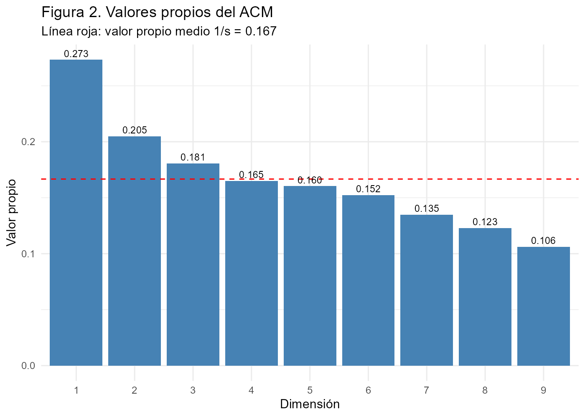
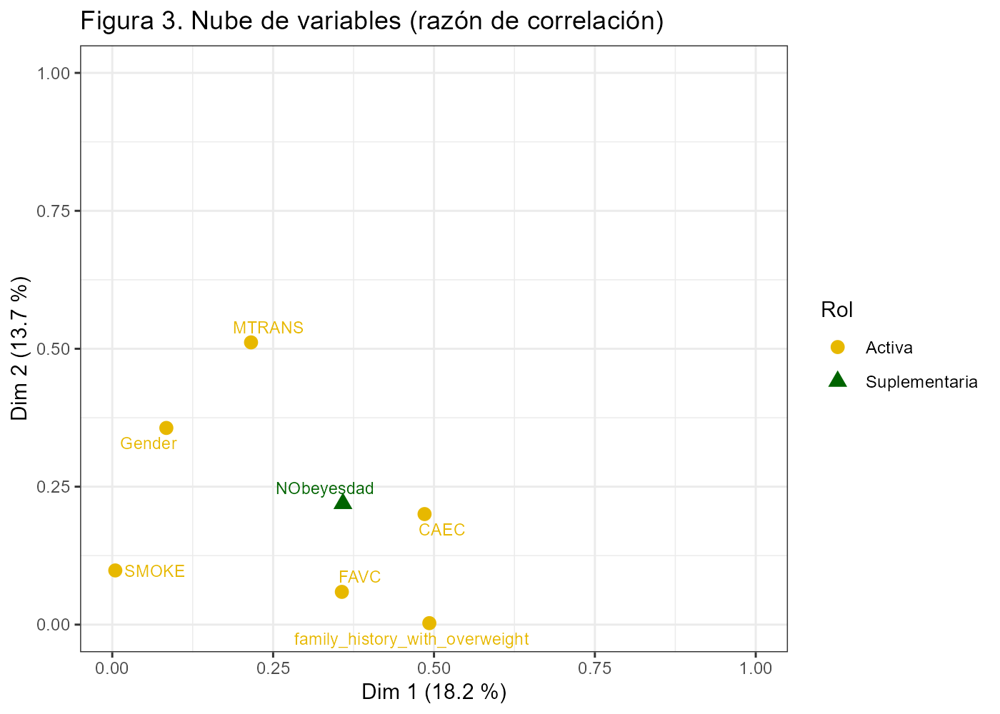
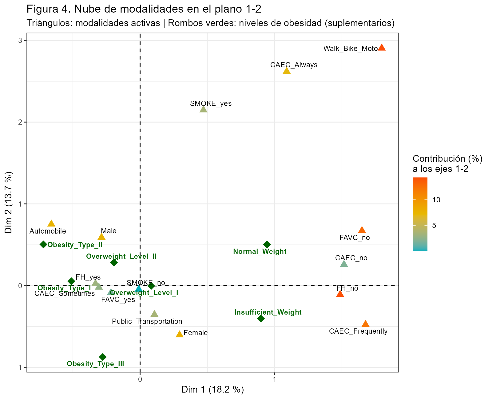
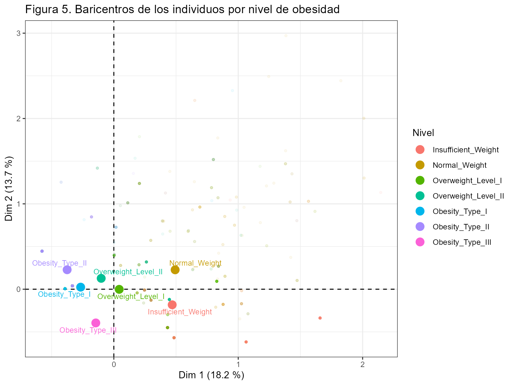
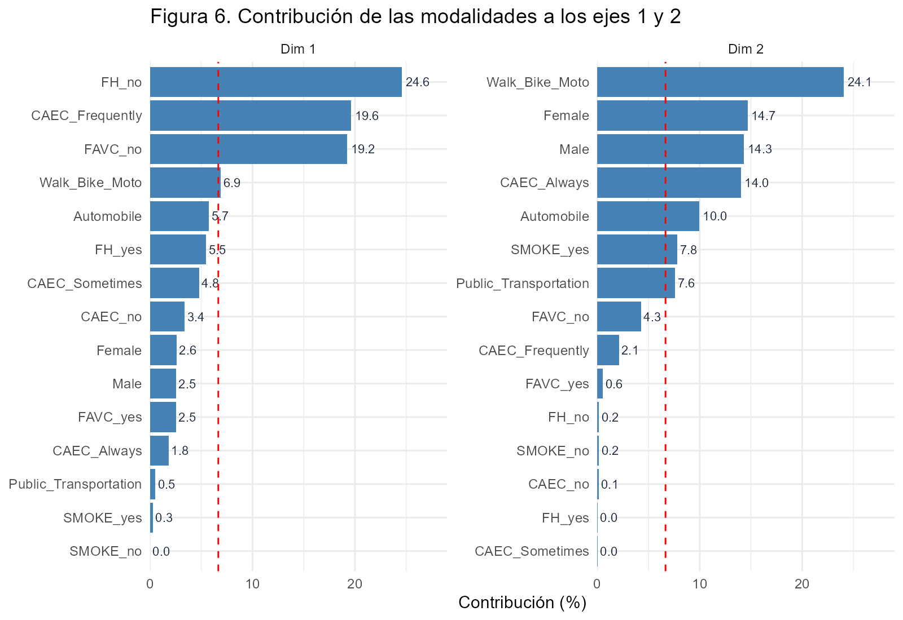
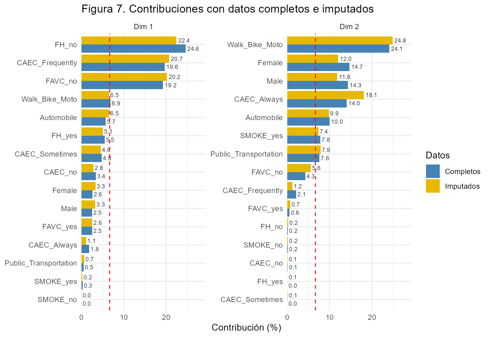

2,111 individuos, 6 variables activas (15 modalidades) y el nivel de obesidad proyectado como variable suplementaria.
Estimation of obesity levels based on eating habits and physical condition · UCI (Palechor y De la Hoz Manotas, 2019).
| Variable | Rol | Modalidades · frecuencia (%) |
|---|---|---|
| Sexo | Activa | Mujer 1,043 (49.4 %); Hombre 1,068 (50.6 %) |
| Antec. familiares | Activa | No 385 (18.2 %); Sí 1,726 (81.8 %) |
| Alim. calóricos | Activa | No 245 (11.6 %); Sí 1,866 (88.4 %) |
| Comer entre comidas | Activa | No 51 (2.4 %); A veces 1,765 (83.6 %); Frecuente 242 (11.5 %); Siempre 53 (2.5 %) |
| Tabaquismo | Activa | No 2,067 (97.9 %); Sí 44 (2.1 %) |
| Transporte | Activa | Automóvil 457 (21.6 %); Público 1,580 (74.8 %); Caminar/Bici/Moto 74 (3.5 %) |
| Nivel de obesidad | Suplem. | Peso insuf. 272 (12.9 %); Normal 287 (13.6 %); Sobrepeso I 290 (13.7 %); Sobrepeso II 290 (13.7 %); Obesidad I 351 (16.6 %); Obesidad II 297 (14.1 %); Obesidad III 324 (15.3 %) |
* Filas con valores no enteros en la edad o en las variables ordinales (FCVC, NCP, CH2O, FAF, TUE); coherente con la generación por SMOTE documentada en el dataset.
| Sexo | Insuf. | Normal | Sobre. I | Sobre. II | Obes. I | Obes. II | Obes. III |
|---|---|---|---|---|---|---|---|
| Mujeres | 173 | 141 | 145 | 103 | 156 | 2 | 323 |
| Hombres | 99 | 146 | 145 | 187 | 195 | 295 | 1 |
Nivel de obesidad = variable suplementaria. Si fuera activa construiría los ejes y colorear por obesidad sería circular.
Transporte agrupado: Caminar (56), Bici (7) y Moto (11) → Caminar/Bici/Moto (74 casos, 3.5 %) para evitar coordenadas extremas.
Composición por sexo condicionada: 323 de 324 casos de obesidad III son mujeres; 295 de 297 de obesidad II son hombres.
Origen: encuesta en Colombia, Perú y México. La distribución casi uniforme por nivel no representa la prevalencia real.
La matriz disyuntiva completa, la inercia total y el número máximo de componentes.
| Parámetro | Valor |
|---|---|
| Observaciones (n) | 2,111 |
| Variables activas (s) | 6 |
| Modalidades activas (p) | 15 |
| Componentes posibles (p − s) | 9 |
| Inercia total (p − s)/s | 1.5 |
| Valor propio medio (1/s) | 0.1667 |
| Matriz disyuntiva (n × p) | 2,111 × 15 |
Cada fila de la matriz disyuntiva suma s = 6: un individuo elige una única modalidad por variable. p − s = 9 es menor que n − 1 = 2,110.
Si el nivel de obesidad fuera activo: p = 22, s = 7 y 15 componentes. Pero construiría los ejes con la información que se quiere explicar.
(p − s)/s = 1.5, coincide con la suma de los 9 valores propios. Valor propio medio 1/s = 0.1667.
En ACM la inercia total incluye la dispersión intra-variable, por eso los porcentajes brutos subestiman la estructura recuperada. Benzécri corrige ese efecto.

salidas/Figura_2.pngFigura 2. Valores propios del ACM (línea roja: valor propio medio 1/s = 0.167).
| Eje | λ | % bruta | % acum. | % Benzécri | % B. acum. |
|---|---|---|---|---|---|
| Dim 1 | 0.273 | 18.21 | 18.21 | 87.34 | 87.34 |
| Dim 2 | 0.205 | 13.65 | 31.87 | 11.17 | 98.50 |
| Dim 3 | 0.181 | 12.04 | 43.91 | 1.50 | 100.00 |
| Dim 4 | 0.165 | 10.99 | 54.90 | 0.00 | 100.00 |
| Dim 5 | 0.160 | 10.69 | 65.58 | 0.00 | 100.00 |
| Dim 6 | 0.152 | 10.15 | 75.73 | 0.00 | 100.00 |
| Dim 7 | 0.135 | 8.99 | 84.73 | 0.00 | 100.00 |
| Dim 8 | 0.123 | 8.19 | 92.92 | 0.00 | 100.00 |
| Dim 9 | 0.106 | 7.08 | 100.00 | 0.00 | 100.00 |
Benzécri: tasas modificadas, calculadas solo con los ejes cuyo valor propio supera 1/s.
Se evaluaron tres criterios complementarios para retener el plano 1-2.
Tres ejes superan 1/s = 0.167 (0.273, 0.205, 0.181). El cuarto (0.165) queda apenas por debajo.
El eje 1 concentra el 87.3 %. Después del eje 2, la inercia restante es mínima: 1.5 % en el eje 3.
Caída marcada tras el eje 1, descenso gradual sin codo desde el 3. Los ejes 1 y 2 se asocian con variables distintas y son interpretables.
Retenemos 2 ejes: acumulan el 98.5 % por Benzécri y permiten la representación gráfica de los puntos 5 a 7.
Limitación: el eje 3 supera ligeramente el valor propio medio y el 68.1 % de la inercia bruta queda fuera del plano.
Consecuencia: ninguna modalidad alcanza un cos² = 0.5 en el plano. Las lecturas del plano son aproximaciones.
Los porcentajes brutos bajos (18.2 % y 13.7 %) son por construcción del ACM: la inercia total incluye la dispersión entre modalidades de una misma variable, que no informa sobre relaciones entre variables.
Las tasas de Benzécri tienden a ser optimistas, por eso se reportan junto con las brutas.
Razón de correlación η² entre cada variable y cada eje (0 a 1).

salidas/Figura_3.png
Figura 3. Nube de variables (razón de correlación η²).
| Variable | η² Dim 1 | η² Dim 2 |
|---|---|---|
| Sexo | 0.084 | 0.356 |
| Antec. familiares | 0.493 | 0.003 |
| Alim. calóricos | 0.357 | 0.059 |
| Comer entre comidas | 0.485 | 0.200 |
| Tabaquismo | 0.005 | 0.098 |
| Transporte | 0.216 | 0.512 |
| Nivel de obesidad (suplem.) | 0.358 | 0.219 |
Celda sombreada: η² ≥ 0.35.
Los signos de los ejes son arbitrarios: se fijó la convención "Antec. fam.: No" positiva en Dim 1 y "Hombre" positiva en Dim 2.

salidas/Figura_4.png
Figura 4. Nube de modalidades en el plano 1-2 (color: contribución a los ejes 1-2). Posiciones relativas según Dim 1: 18.2 %; Dim 2: 13.7 %. Signos según convención del informe.
Derecha: Antec. fam.: No (+1.49), Calóricos: No (+1.65), Comer: Frecuente (+1.68), Comer: No (+1.52), Caminar/Bici/Moto (+1.80) → peso normal / insuficiente.
Izquierda: Antec. fam.: Sí (−0.33), Calóricos: Sí (−0.22), Comer: A veces (−0.31), Automóvil (−0.66) → obesidad I y II, sobrepeso II.
Positivo: Caminar/Bici/Moto (+2.91), Comer: Siempre (+2.62), Fuma: Sí (+2.15), Automóvil (+0.75), Hombre (+0.59).
Negativo: Mujer (−0.60), Transp. público (−0.35), Comer: Frecuente (−0.48), Obesidad III (−0.87).
Comer: Frecuente queda del lado del peso normal: es asociación en esta muestra, no evidencia de un efecto. Puede reflejar la generación sintética.
Los 2,111 individuos se reducen a 95 perfiles distintos: con 6 variables categóricas, muchos comparten exactamente las mismas respuestas. La nube tiene 95 puntos con multiplicidad, no 2,111 puntos independientes.
| Nivel de obesidad | Coord. Dim 1 | Coord. Dim 2 | valor test D1 | valor test D2 |
|---|---|---|---|---|
| Peso insuficiente | 0.898 | −0.404 | 15.86 | −7.13 |
| Peso normal | 0.943 | 0.502 | 17.18 | 9.15 |
| Sobrepeso I | 0.082 | −0.004 | 1.51 | −0.07 |
| Sobrepeso II | −0.194 | 0.281 | −3.56 | 5.16 |
| Obesidad I | −0.510 | 0.053 | −10.47 | 1.08 |
| Obesidad II | −0.718 | 0.504 | −13.35 | 9.36 |
| Obesidad III | −0.278 | −0.874 | −5.43 | −17.09 |
valor test: |valor test| > 1.96 indica que la modalidad se aleja significativamente del origen (sombreado).

salidas/Figura_5.png
Figura 5. Coordenadas medias (baricentros) de los individuos de cada nivel de obesidad.
Eje 1 (gradiente): peso insuficiente y normal en el lado positivo (+0.47 y +0.49); sobrepeso I cerca del origen (+0.04); sobrepeso II y obesidad I y II en el negativo (−0.10, −0.27 y −0.38). Eje 2: obesidad III se separa (−0.40), mientras normal y obesidad II quedan en el positivo (+0.23). Todos los niveles salvo sobrepeso I se alejan significativamente del origen en al menos un eje (|valor test| > 1.96).
Esas diferencias son de posición media: las coordenadas de los baricentros (entre 0.0 y 0.5) son pequeñas frente a la dispersión de los individuos (hasta ~3 unidades en el eje 2 por perfiles con modalidades raras), y los individuos de distintos niveles se mezclan cerca del origen. Los hábitos y el sexo analizados orientan el nivel de obesidad, pero no lo separan en grupos definidos.
La contribución mide qué construye el eje; el cos² mide qué tan bien está representado el punto. Aplica a modalidades e individuos.

salidas/Figura_6.png
Figura 6. Contribución de las modalidades a los ejes 1 y 2 (línea roja: contribución media 100/15 = 6.67 %).
| Modalidad | C. D1 | C. D2 | cos² plano |
|---|---|---|---|
| Caminar/Bici/Moto | 6.89 | 24.08 | 0.424 |
| Antec. fam.: No | 24.58 | 0.18 | 0.495 |
| Calóricos: No | 19.24 | 4.27 | 0.416 |
| Comer: Frecuente | 19.62 | 2.11 | 0.393 |
| Mujer | 2.59 | 14.68 | 0.441 |
| Hombre | 2.53 | 14.34 | 0.441 |
| Comer: Siempre | 1.82 | 14.03 | 0.207 |
| Automóvil | 5.74 | 9.95 | 0.276 |
Sombreado: contribución ≥ 10 % al eje. Ninguna modalidad supera cos² = 0.5 en el plano.
Comer: Siempre contribuye 14.0 % al eje 2, pero su cos² del plano es solo 0.207: construye el eje, pero su posición se explica en parte por otros ejes. A la inversa, Comer: A veces contribuye poco al eje 1 (4.8 %) pero está bien representada (0.480).
Se generó un 10 % de datos faltantes completamente al azar, solo en las 6 variables activas, con set.seed(123). Se corrieron 30 repeticiones (semillas 123 a 152).

salidas/Figura_7.pngFigura 7. Contribución de las modalidades a los ejes 1 y 2 con datos completos e imputados (semilla 123).
| Dim | Completo % | Imputado % | Diferencia |
|---|---|---|---|
| Dim 1 | 18.21 | 18.63 | +0.42 pp |
| Dim 2 | 13.65 | 14.05 | +0.40 pp |
Diferencias en puntos porcentuales, no en %.
| Indicador | Media |
|---|---|
| Acierto imputación (imputeMCA) | 0.806 |
| Acierto por la moda | 0.796 |
| Correlación coord. modalidades · Dim 1 | 0.996 |
| Correlación coord. modalidades · Dim 2 | 0.990 |
| Coeficiente RV (individuos, plano 1-2) | 0.929 |
| Variación inercia Dim 1 (promedio) | +0.67 pp |
| Variación inercia Dim 2 (promedio) | +0.36 pp |
Correlación de coordenadas de modalidades ≥ 0.99: los ejes imputados son casi idénticos a los originales.
imputeMCA supera por apenas 1.0 pp a asignar la modalidad más frecuente: frente a la moda, la ganancia es pequeña.
El coeficiente RV = 0.929 y el aumento de inercia (+0.42 pp y +0.40 pp en la semilla base) son compatibles con que el plano 1-2 siga siendo el mismo.
Dos ejes interpretables; pero los hábitos y el sexo no separan el nivel de obesidad en grupos definidos.
El ACM resume la asociación entre hábitos y nivel de obesidad, pero la calidad de representación es moderada y las lecturas del plano son aproximaciones. Los hábitos y el sexo orientan el nivel de obesidad, pero no lo separan en grupos definidos.